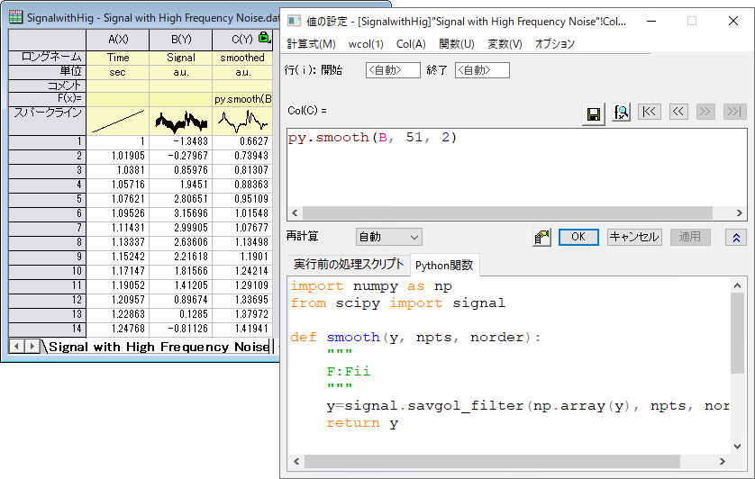
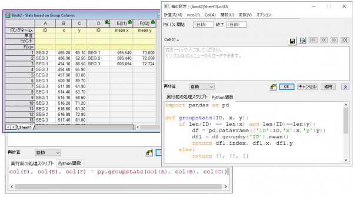
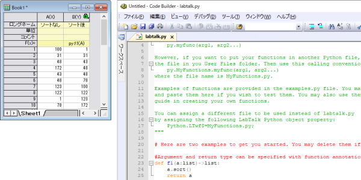

列値の設定
列値の設定ダイアログやスクリプトウィンドウ、スクリプトを設定したボタンといった、Origin内でLabTalkスクリプトにアクセス可能な様々な場所で、LabTalkを使ってPython関数を呼び出し可能です。
値の設定でPython関数を使用
ワークシートや行列シートの両方の値の設定ダイアログで、Python関数の定義およびアクセスが可能です。Python関数は、Python関数タブで定義する必要があります。関数は、式の編集ボックスから、または、実行前の処理スクリプトタブから呼び出すことができます。
Python関数が他のパッケージを必要とする場合は、値の設定ダイアログで関数を定義およびアクセスする前にインストールしておく必要があります。
最適なパフォーマンスを得るためには、浮動小数点型または文字列のリストを返すように関数を定義するのがお勧めです。関数が1つの浮動小数型または文字列の値を返すように定義されている場合、計算に関係する行ごとに関数が呼び出されます。
サンプル 1
このサンプルでは、列Cの列式でPython関数を使用し、列Bのノイズの多いデータをスムージングします。関数は、次のように定義します。
import numpy as np
from scipy import signal
def smooth(y, npts, norder):
"""
F:Fii
"""
y=signal.savgol_filter(np.array(y), npts, norder)
return y
この関数は、浮動小数点型のリストと、スムージングウィンドウと多項式の次数を指定する2つの整数を受け入れ、浮動小数点型のリストを返します。入力および出力の型は、docstring F:Fii で指定します。。ここでは、NumPy および SciPyパッケージはインストール済みであると仮定します。
式の編集ボックスから関数にアクセスするには、次のようにして関数名の先頭にpy...を付ける必要があります。
py.smooth(B, 51, 2)
以下は、元のデータと結果が入力されたワークシートと、Python関数タブが表示された値の設定ダイアログの画像です。 
サンプル 2
このサンプルでは、Python関数を使ってデータ列のグループごとに統計を実行します。この関数は3列のデータを取り、結果が入力された3列を返します。したがって、式の編集ボックスから直接この関数を呼び出すことはできません。代わりに、実行前の処理スクリプトタブを使って関数を呼び出します。
次のようにして関数を定義します。
import pandas as pd
def groupstats(ID, x, y):
if len(ID) == len(x) and len(ID)==len(y):
df = pd.DataFrame({'ID':ID,'x':x,'y':y})
df1 = df.groupby('ID').mean()
return df1.index, df1.x, df1.y
else:
return [], [], []
この関数では、入力および出力の型ははっきりと定義していません。関数に渡された3つの入力列は、リストに変換されます。データフレームを使用して計算が実行され、関数は3つのリストを返します。戻り値は、実行前の処理スクリプトタブのスクリプトコマンドを使用して3つの列に出力されます。
col(D), col(E), col(F) = py.groupstats(col(A), col(B), col(C))

サンプル 3
上述の2つのサンプルでは、値の設定ダイアログでPython関数を定義しました。Python関数と一緒にワークシートをテンプレートとして保存し、のちにテンプレートの新しいインスタンスを開いて使用することができます。
Python関数を外部ファイルで定義してから、列またはセルの式で使用することもできます。次のサンプルでは、labTalk.pyファイルで定義された関数を呼び出します。外部ファイルでの関数定義に関する詳細は、次のセクションを参照してください。

 |
- 実行前の処理スクリプトとPython関数とともに列の式を保存するには、（1）値の設定ダイアログのメニュー計算式：名前を付けて保存をクリックするか、（2）値の設定の式を保存ボタンをクリックするか、（3）列ラベル行のF(x)=セルを右クリックして、名前を付けて保存を選択します。保存した式をOriginメニューからロードするには、列：ユーザ式入力を選択してフライアウトメニューから式名を選択すると可能です。
- ワークシートのF(x)=セルが「py.」で始まる場合、および、外部ファイルで定義されたPython関数を呼び出す場合は、F(x)=セルを右クリックし、Pythonファイルを開くを選択して、コードビルダIDEでPython関数を開くことができます。
|
外部ファイルからPython関数を呼び出す
Python関数は、外部.pyファイルで定義できます。Originはデフォルトで、ユーザファイルフォルダ(UFF)にあるlabtalk.pyという名前のファイルを探します。Originメニューからこのファイルを開くには、接続：デフォルトのPython関数を開く...を選択します。
labtalk.pyファイルで定義された関数は、次のシンタックスを使ったLabTalkスクリプトから呼び出し可能です。
col(B)=py.f1(col(A));
ここで、f1は関数名です。
|
examples.pyファイルにはPython関数定義のサンプルがいくつかあります。Originメニューからこのファイルを開くには、接続：examples.pyを開く...を選択します。このファイルからlabtalk.pyファイルに関数をコピーできます。
|
他の.pyファイルで関数を定義する場合、次のシンタックスでアクセスできます。
col(b) = py.myfuncs.sort(col(a))
ここで、sort() は、ファイル名myfuncs.py で定義されている関数です。
Originはデフォルトでユーザファイルフォルダ(UFF)内の.pyファイルを検索します。異なるディレクトリを設定するには、PythonオブジェクトプロパティPython.LTwd$を使います。
PythonオブジェクトプロパティPython.LTwf$を設定することで、関数呼び出し時にファイル名を省略できます。
Python.LTwd$="D:\Python";
Python.LTwf$=MyFunctions.py;
col(B)=py.sort(col(A)); // D:\PytyhonフォルダにあるMyFunctions.pyからsort関数を呼び出す
上記で使用されているオブジェクトプロパティは空で、デフォルトでは設定されていません。デフォルトのPythonファイルの位置は、内部的にはUFFに設定されています。そしてデフォルトのファイル名は内部的にlabtalk.pyです。これらのプロパティに値を割り当てると、その値はOriginのUFF内にある.iniファイルに保存されます。
入力および出力の型を指定
Python関数は、入力および出力引数の型を指定して定義できます。型の指定方法は以下の2通りです。
- 関数アノテーションを使用
- Docstringを使用
以下にいくつかのサンプルを示します。
# 型の指定に関数アノテーションを使う例
def a1(a, k:int):
return a + k
def a2(a, b)->int:
return a + b
def ss1(a:str, b:str)->str:
"""using function annotations"""
c = a + b
return c
def ss3(a:list)->list:
return [len(x) for x in a]
def ss2(a:list, b:list)->list:
c = [ x + y for x,y in zip(a, b)]
return c
# 型の指定にdocstringを使う例
def s2(a,b):
"""
S:SS
concatenate strings, array version
"""
c = [ x + y for x,y in zip(a, b)]
return c
def s1(a, b):
"""
s:ss
concatenate strings, scaler version
"""
c = a + b
return c
def s3(a):
"""
F:S
intput string list and return float list
"""
return [len(x) for x in a]
def sin(a):
"""
F:F
return sine
"""
return np.sin(np.asarray(a))
この関数は、浮動小数点型のリストと2つの整数を入力として受け入れ、浮動小数点型のリストを返します。そして、この関数はNumPyとSciPyパッケージを使用します。
import numpy as np
from scipy import signal
def smooth(y,npts, norder):
"""
F:Fii
Perform Savitzky-Golay smoothing using scipy signal
"""
#npts: スムージングウィンドウのポイント数
#norder: 多項式次数
y=signal.savgol_filter( np.array(y), npts, norder )
return y
ただし、列の式から関数にアクセスできるかどうかは、関数の定義方法によって異なります。
スカラー関数として定義され、各行で呼び出される場合、次のようにして入力/出力の型を指定する必要があります。
def a1(a:float, b:int = 10)->float:
return a+b
ベクトル関数として定義された場合、次のように、入力/出力の型を指定する必要がありません。
def a1(a, b:int = 10):
return [x + b for x in a]
ここでは、入出力タイプをリストとしています。
いずれの場合も、関数を列の式で使用することもできますし、col(B)=py.a1(col(A)) のようにスクリプトから使用することもできます。
複数の値または配列を返す
Python関数からLabTalkに、複数の値またはリストを返すことができます。
この関数は、リストと2つの浮動小数点型を入力として受け入れ、2つのリストを返します。
def f3(a, b=5, c=10):
b = [x + b for x in a]
c = [x + c for x in a]
return b, c
新しいワークシートで、col(A)に値が入力されます。次に、スクリプトから、以下のような関数にアクセスできます。
col(b),col(c)=py.f3(col(a))
タプルを返す例：
ユーザファイルフォルダのlabtalk.pyファイルに以下を追加して、ファイルを保存します。
def TestReturnTuple(arg1, arg2, arg3):
print('TestReturnTuple11: arg1 = ', arg1)
print('TestReturnTuple11: arg2 = ', arg2)
print('TestReturnTuple11: arg3 = ', arg3)
return ([arg1, 10*arg1, 100*arg1], [arg2, arg2/10., arg2/100., arg2/1000.], 1000 * arg3)
サンプルを実行するには以下のように操作します。
- メインメニューから、ウィンドウ：スクリプトウィンドウを選択します。
- 新しいワークブックを開き、以下をスクリプトウィンドウ内にコピーし、スクリプト全体を選択してEnterキーを押します。
col(A), col(B), myvar= py.TestReturnTuple(3., 45., 66);
myvar=;
この関数は、2つのリスト（1つはcol(A)、もう1つはcol(B)）と、LabTalk変数myvarに書き込まれる1つの数値スカラーを持つタプルを返します。
プロジェクトに添付されたファイルから関数を呼び出す
Python関数は、Originプロジェクト(OPJU)に添付された.pyファイルで定義することもできます。ファイルに添付された関数は、次のようにしてアクセスできます。
col(b)=py.@filename.func(col(a))
ファイル名の最初の@文字により、ファイルがプロジェクトに添付されていることをOriginに示すことができます。
プロジェクトに添付されている.pyファイルが1つだけの場合（推奨）は、関数にアクセスする際に関数名を省くことができます。たとえば、次のようになります。
col(b)=py.@func(col(a))